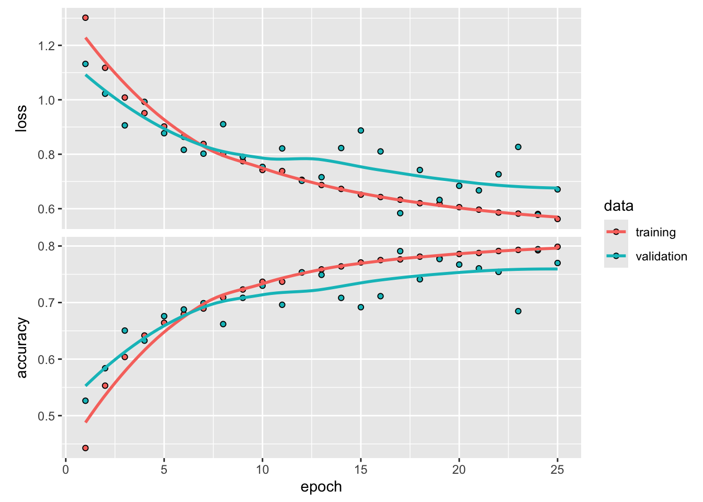

library(fs)Warning: package 'fs' was built under R version 4.4.1library(tensorflow)
library(keras)This notebook will walk through setting up a model for the semantic segmentation of images using convolutional neural networks (CNNs). Unlike classification, where we attempt to predict a label associated with an image (e.g. cat or dog), in semantic segmentation, we are trying to label each pixel within an image. This is usually done by providing a corresponding mask for each training image that indicates which pixels belong to which class. The example used here is based on a set of aerial images taken across Dubai and used in a Kaggle competition:
https://www.kaggle.com/datasets/humansintheloop/semantic-segmentation-of-aerial-imagery
There are a total of 72 images and masks in this dataset. In the interest of making this tractable in a class, we’ll just train the model using a subset (18) of these images, and only for a few epochs. With a relatively small dataset, the goal of this lab is demonstrate how to build and evaluate these models. I would not expect to get a very high level of accuracy without increasing both the size of the data and the number of epochs.
Code for the UNet model in this example has been modified from https://github.com/r-tensorflow/unet/tree/master
First, let’s load some libraries
library(fs)Warning: package 'fs' was built under R version 4.4.1library(tensorflow)
library(keras)Next, we’ll get the images. These are available through the class Google drive in the zip file unet_images3.zip. Download this now, and move it to a folder that is easy to find on your computer, and unzip it. This will create a set of folders that look like this:
- images3
- images
- masksIn each of these you’ll find matching images. The images folder contains the RGB image as JPEGs, and the masks folder contains the matching mask as PNG files. The file names should match, so image_part_001_000.png will be the mask for image_part_001_000.jpg. These files are smaller tiles created from the original images. If you want to see what the original images look like, download and unzip the file unet_images2.zip. If you have this, you can load an example of each. First, we’ll make a couple of functions to display images using keras functions:
display_image_tensor <- function(x, ..., max = 255,
plot_margins = c(0, 0, 0, 0)) {
if(!is.null(plot_margins))
par(mar = plot_margins)
x |>
as.array() |>
drop() |>
as.raster(max = max) |>
plot(..., interpolate = FALSE)
}
display_target_tensor <- function(target) {
display_image_tensor(target, max = 5)
}Now get the list of full images:
data_dir <- path("./datafiles/images2/")
input_dir <- data_dir / "images/"
target_dir <- data_dir / "masks/"
image_paths <- tibble::tibble(
input = sort(dir_ls(input_dir, glob = "*.jpg")),
target = sort(dir_ls(target_dir, glob = "*.png")))And here’s the first image:
image_paths$input[1] |>
tf$io$read_file() |>
tf$io$decode_jpeg() |>
display_image_tensor()And the corresponding mask:
image_paths$target[1] |>
tf$io$read_file() |>
tf$io$decode_png() |>
display_image_tensor()Now let’s take a look at the tiles in images3/. We’ll make a list of the full paths to both images and masks for use in training the model
data_dir <- path("./datafiles/images3/")
dir_create(data_dir)
input_dir <- data_dir / "images/"
target_dir <- data_dir / "masks/"
image_paths <- tibble::tibble(
input = sort(dir_ls(input_dir, glob = "*.jpg")),
target = sort(dir_ls(target_dir, glob = "*.png")))
image_paths# A tibble: 2,016 × 2
input target
<fs::path> <fs::path>
1 ./datafiles/images3/images/image_part_001_000.jpg …sks/image_part_001_000.png
2 ./datafiles/images3/images/image_part_001_001.jpg …sks/image_part_001_001.png
3 ./datafiles/images3/images/image_part_001_002.jpg …sks/image_part_001_002.png
4 ./datafiles/images3/images/image_part_001_003.jpg …sks/image_part_001_003.png
5 ./datafiles/images3/images/image_part_001_004.jpg …sks/image_part_001_004.png
6 ./datafiles/images3/images/image_part_001_005.jpg …sks/image_part_001_005.png
7 ./datafiles/images3/images/image_part_001_006.jpg …sks/image_part_001_006.png
8 ./datafiles/images3/images/image_part_001_007.jpg …sks/image_part_001_007.png
9 ./datafiles/images3/images/image_part_001_008.jpg …sks/image_part_001_008.png
10 ./datafiles/images3/images/image_part_001_009.jpg …sks/image_part_001_009.png
# ℹ 2,006 more rowsIf we plot the first image, you should see that it is the top-left corner of the original image
image_paths$input[1] |>
tf$io$read_file() |>
tf$io$decode_jpeg() |>
display_image_tensor()We’ll load the matching mask as well. Note that this has been converted to an integer mask, with 6 possible classes:
Building = 0
Land = 1
Road = 2
Vegetation = 3
Water = 4
Unlabeled = 5image_paths$target[1] |>
tf$io$read_file() |>
tf$io$decode_png() |>
display_target_tensor()Next, we’ll create two tensorflow datasets that hold the images. As this is a fairly small dataset, we’ll simply read the images into memory. For larger sets, we would need to create a data generator here. We’ll first make a couple of helper functions:
library(tfdatasets)
tf_read_image <-
function(path, format = "image", resize = NULL, ...) {
img <- path |>
tf$io$read_file() |>
tf$io[[paste0("decode_", format)]](...)
if (!is.null(resize))
img <- img |>
tf$image$resize(as.integer(resize))
img
}
tf_read_image_and_resize <- function(..., resize = img_size) {
tf_read_image(..., resize = resize)
}
make_dataset <- function(paths_df) {
tensor_slices_dataset(paths_df) |>
dataset_map(function(path) {
image <- path$input |>
tf_read_image_and_resize("jpeg", channels = 3L) ## Reads images (3 channels)
target <- path$target |>
tf_read_image_and_resize("png", channels = 1L) ## Reads masks (1 channel)
# target <- target - 1
list(image, target) ## Stores image and corresponding mask
}) |>
dataset_cache() |> ## Dynamically caches the images
dataset_shuffle(buffer_size = nrow(paths_df)) |> ## Shuffles images between runs
dataset_batch(32)
}Now let’s create the dataset. First, we’ll define the input image size - for this we’ll keep the images at their original size (128x128) but this can be used if the tiles are of different sizes to ensure all input tensors are the same. Second, we define the number of images to be used for validation (roughly 25% of the inputs). Third, we split the list of file names into training and validation. And finally, we make the two datasets
img_size <- c(128, 128)
num_val_samples <- 500
val_idx <- sample.int(nrow(image_paths), num_val_samples)
val_paths <- image_paths[val_idx, ]
train_paths <- image_paths[-val_idx, ]
validation_dataset <- make_dataset(val_paths)
train_dataset <- make_dataset(train_paths)We’ll finish this section by defining a set of variables describing the images: the width and height, the number of channels and classes
image_width = img_size[1]
image_height = img_size[2]
num_channels = 3
num_classes = 6Now let’s turn to building the model. We’ll use a basic UNet architecture for this. This has two sequential branches (encoder and decoder) as well as a number of skip connections. The encoder branch operates like a classic CNN, with convolution and pooling layers. The decoder reverses this, by upsampling to increase resolution and more convolutions. Practically, each branch has a series of steps which either decrease resolution (encoder) or increase it (decoder). The steps on each side match: so for example, the encoder could have step going from a resolution of 64 to 32, and the decoder has a matching set going from 32 to 64.
We’ll need to use some new layer types for this, so we’ll take a look at these first
Upsampling layers acts as the opposite to a max-pooling layer. Pooling reduces the size of the inputs, by only replacing a window of pixels (usually 2 by 2) with a single pixel containing the maximum value of the original 4. An upsampling layer will increase the resolution of the input according to a defined window (usually 2x2, meaning each original pixel is split into 4). There are two types of upsampling layers
UpSampling2DThis simply increases the resolution of the input. So an input pixel with the value of 2 will be split into 4, each with the value of 2:
In: [2]
Out: [[2, 2],
[2, 2]]Conv2DTransposeIn addition to the upsampling, this layer applies convlutional filters. As a result, the value of the 4 output pixels are based on feature recognition in the coarser image, rather than simply using the same value
Skip connections are used to join the encoder and decoder branch. These join the matching encoder and decoder steps (e.g. the downsampling from 64 to 32 and the upsampling from 32 to 64). This is done through the use of concatenate layers. These link together output from different layers - for example, if you wanted to introduce two different sets of input features through different networks, a concatenate layer then merges these together before linking to the output.
To understand how this works for the UNet model, let’s say our input images are 128x128 pixels:
In practice this is more complex as these skip connections are taking place at every down/up-sampling step.
Let’s actually build the model now so that you can see what this looks like. We’ll use the functional API which will allow us to build this in sections. One thing to note here is that (after the input), we store the layers in an object called x, then add the next layer to this so that it accumulates these:
## To store the blocks for the downward pass
down_layers <- list()## Input
input <- layer_input(shape = c(image_width, image_height, num_channels))
x <- layer_rescaling(input, 1/255)First downsampling block. This is the first of four downsampling blocks that make up the encoder. These will have the same format, but the number of convolutional filters will increase by 2 at each block:
A first convolutional layer
A dropout layer
A second convolutional layer
(Store the block)
A max-pooling layer
## ------------
# Encoder path: forward step 1
x <- layer_conv_2d(x, filters = 16, kernel_size = c(3,3),
activation = "relu", kernel_initializer = "he_normal", padding = "same")
x <- layer_dropout(x, rate = 0.1)
x <- layer_conv_2d(x, filters = 16, kernel_size = c(3,3),
activation = "relu", kernel_initializer = "he_normal", padding = "same")
## Store block
down_layers[[1]] <- x
## Max-pooling
x <- layer_max_pooling_2d(x, pool_size = c(2,2), strides = c(2,2))## ------------
# Encoder path: forward step 2
x <- layer_conv_2d(x, filters = 32, kernel_size = c(3,3),
activation = "relu", kernel_initializer = "he_normal", padding = "same")
x <- layer_dropout(x, rate = 0.1)
x <- layer_conv_2d(x, filters = 32, kernel_size = c(3,3),
activation = "relu", kernel_initializer = "he_normal", padding = "same")
## Store block
down_layers[[2]] <- x
## Max-pooling
x <- layer_max_pooling_2d(x, pool_size = c(2,2), strides = c(2,2))## ------------
# Encoder path: forward step 3
x <- layer_conv_2d(x, filters = 64, kernel_size = c(3,3),
activation = "relu", kernel_initializer = "he_normal", padding = "same")
x <- layer_dropout(x, rate = 0.1)
x <- layer_conv_2d(x, filters = 64, kernel_size = c(3,3),
activation = "relu", kernel_initializer = "he_normal", padding = "same")
## Store block
down_layers[[3]] <- x
## Max-pooling
x <- layer_max_pooling_2d(x, pool_size = c(2,2), strides = c(2,2))## ------------
# Encoder path: forward step 4
x <- layer_conv_2d(x, filters = 128, kernel_size = c(3,3),
activation = "relu", kernel_initializer = "he_normal", padding = "same")
x <- layer_dropout(x, rate = 0.1)
x <- layer_conv_2d(x, filters = 128, kernel_size = c(3,3),
activation = "relu", kernel_initializer = "he_normal", padding = "same")
## Store block
down_layers[[4]] <- x
## Max-pooling
x <- layer_max_pooling_2d(x, pool_size = c(2,2), strides = c(2,2))## ------------
# Latent space
## Add another dropout
x <- layer_dropout(x, rate = 0.1)
## Convolutional layer on latent space
x <- layer_conv_2d(x, filters = 256, kernel_size = c(3,3),
activation = "relu", kernel_initializer = "he_normal", padding = "same")
x <- layer_conv_2d(x, filters = 256, kernel_size = c(3,3),
activation = "relu", kernel_initializer = "he_normal", padding = "same")Conv2DTranspose layer to upsample the inputs, increasing the resolutionconcatenate layer that links this to the corresponding downsampling block (this will be the fourth one)## ------------
# Decoder path 4
x <- keras::layer_conv_2d_transpose(x, filters = 128, kernel_size = c(2,2),
padding = "same", strides = c(2,2))
x <- keras::layer_concatenate(list(down_layers[[4]], x))
x <- layer_conv_2d(x, filters = 128, kernel_size = c(3,3),
activation = "relu", kernel_initializer = "he_normal", padding = "same")
x <- layer_dropout(x, rate = 0.1)
x <- layer_conv_2d(x, filters = 128, kernel_size = c(3,3),
activation = "relu", kernel_initializer = "he_normal", padding = "same")## ------------
# Decoder path 3
x <- keras::layer_conv_2d_transpose(x, filters = 64, kernel_size = c(2,2),
padding = "same", strides = c(2,2))
x <- keras::layer_concatenate(list(down_layers[[3]], x))
x <- layer_conv_2d(x, filters = 64, kernel_size = c(3,3),
activation = "relu", kernel_initializer = "he_normal", padding = "same")
x <- layer_dropout(x, rate = 0.1)
x <- layer_conv_2d(x, filters = 64, kernel_size = c(3,3),
activation = "relu", kernel_initializer = "he_normal", padding = "same")## ------------
# Decoder path 2
x <- keras::layer_conv_2d_transpose(x, filters = 32, kernel_size = c(2,2),
padding = "same", strides = c(2,2))
x <- keras::layer_concatenate(list(down_layers[[2]], x))
x <- layer_conv_2d(x, filters = 32, kernel_size = c(3,3),
activation = "relu", kernel_initializer = "he_normal", padding = "same")
x <- layer_dropout(x, rate = 0.1)
x <- layer_conv_2d(x, filters = 32, kernel_size = c(3,3),
activation = "relu", kernel_initializer = "he_normal", padding = "same")## ------------
# Decoder path 1
x <- keras::layer_conv_2d_transpose(x, filters = 16, kernel_size = c(2,2),
padding = "same", strides = c(2,2))
x <- keras::layer_concatenate(list(down_layers[[1]], x))
x <- layer_conv_2d(x, filters = 16, kernel_size = c(3,3),
activation = "relu", kernel_initializer = "he_normal", padding = "same")
x <- layer_dropout(x, rate = 0.1)
x <- layer_conv_2d(x, filters = 16, kernel_size = c(3,3),
activation = "relu", kernel_initializer = "he_normal", padding = "same")flatten layer we have previously used, but here forces the output into a shape that is compatible with the masks. The masks have 6 channels (one for each class)## ------------
# Output layer
output <- keras::layer_conv_2d(x, filters = num_classes,
kernel_size = c(1,1), activation = "softmax")With all that done, we can now make the model by linking the input layers and the output:
model <- keras::keras_model(input, output)Let’s take a look at the model summary:
summary(model)Model: "model"
________________________________________________________________________________
Layer (type) Output Shape Param Connected to
#
================================================================================
input_1 (InputLayer) [(None, 128, 128, 3)] 0 []
rescaling (Rescaling) (None, 128, 128, 3) 0 ['input_1[0][0]']
conv2d (Conv2D) (None, 128, 128, 16) 448 ['rescaling[0][0]']
dropout (Dropout) (None, 128, 128, 16) 0 ['conv2d[0][0]']
conv2d_1 (Conv2D) (None, 128, 128, 16) 2320 ['dropout[0][0]']
max_pooling2d (MaxPoo (None, 64, 64, 16) 0 ['conv2d_1[0][0]']
ling2D)
conv2d_2 (Conv2D) (None, 64, 64, 32) 4640 ['max_pooling2d[0][0]']
dropout_1 (Dropout) (None, 64, 64, 32) 0 ['conv2d_2[0][0]']
conv2d_3 (Conv2D) (None, 64, 64, 32) 9248 ['dropout_1[0][0]']
max_pooling2d_1 (MaxP (None, 32, 32, 32) 0 ['conv2d_3[0][0]']
ooling2D)
conv2d_4 (Conv2D) (None, 32, 32, 64) 18496 ['max_pooling2d_1[0][0]'
]
dropout_2 (Dropout) (None, 32, 32, 64) 0 ['conv2d_4[0][0]']
conv2d_5 (Conv2D) (None, 32, 32, 64) 36928 ['dropout_2[0][0]']
max_pooling2d_2 (MaxP (None, 16, 16, 64) 0 ['conv2d_5[0][0]']
ooling2D)
conv2d_6 (Conv2D) (None, 16, 16, 128) 73856 ['max_pooling2d_2[0][0]'
]
dropout_3 (Dropout) (None, 16, 16, 128) 0 ['conv2d_6[0][0]']
conv2d_7 (Conv2D) (None, 16, 16, 128) 14758 ['dropout_3[0][0]']
4
max_pooling2d_3 (MaxP (None, 8, 8, 128) 0 ['conv2d_7[0][0]']
ooling2D)
dropout_4 (Dropout) (None, 8, 8, 128) 0 ['max_pooling2d_3[0][0]'
]
conv2d_8 (Conv2D) (None, 8, 8, 256) 29516 ['dropout_4[0][0]']
8
conv2d_9 (Conv2D) (None, 8, 8, 256) 59008 ['conv2d_8[0][0]']
0
conv2d_transpose (Con (None, 16, 16, 128) 13120 ['conv2d_9[0][0]']
v2DTranspose) 0
concatenate (Concaten (None, 16, 16, 256) 0 ['conv2d_7[0][0]',
ate) 'conv2d_transpose[0][0]
']
conv2d_10 (Conv2D) (None, 16, 16, 128) 29504 ['concatenate[0][0]']
0
dropout_5 (Dropout) (None, 16, 16, 128) 0 ['conv2d_10[0][0]']
conv2d_11 (Conv2D) (None, 16, 16, 128) 14758 ['dropout_5[0][0]']
4
conv2d_transpose_1 (C (None, 32, 32, 64) 32832 ['conv2d_11[0][0]']
onv2DTranspose)
concatenate_1 (Concat (None, 32, 32, 128) 0 ['conv2d_5[0][0]',
enate) 'conv2d_transpose_1[0][
0]']
conv2d_12 (Conv2D) (None, 32, 32, 64) 73792 ['concatenate_1[0][0]']
dropout_6 (Dropout) (None, 32, 32, 64) 0 ['conv2d_12[0][0]']
conv2d_13 (Conv2D) (None, 32, 32, 64) 36928 ['dropout_6[0][0]']
conv2d_transpose_2 (C (None, 64, 64, 32) 8224 ['conv2d_13[0][0]']
onv2DTranspose)
concatenate_2 (Concat (None, 64, 64, 64) 0 ['conv2d_3[0][0]',
enate) 'conv2d_transpose_2[0][
0]']
conv2d_14 (Conv2D) (None, 64, 64, 32) 18464 ['concatenate_2[0][0]']
dropout_7 (Dropout) (None, 64, 64, 32) 0 ['conv2d_14[0][0]']
conv2d_15 (Conv2D) (None, 64, 64, 32) 9248 ['dropout_7[0][0]']
conv2d_transpose_3 (C (None, 128, 128, 16) 2064 ['conv2d_15[0][0]']
onv2DTranspose)
concatenate_3 (Concat (None, 128, 128, 32) 0 ['conv2d_1[0][0]',
enate) 'conv2d_transpose_3[0][
0]']
conv2d_16 (Conv2D) (None, 128, 128, 16) 4624 ['concatenate_3[0][0]']
dropout_8 (Dropout) (None, 128, 128, 16) 0 ['conv2d_16[0][0]']
conv2d_17 (Conv2D) (None, 128, 128, 16) 2320 ['dropout_8[0][0]']
conv2d_18 (Conv2D) (None, 128, 128, 6) 102 ['conv2d_17[0][0]']
================================================================================
Total params: 1941190 (7.41 MB)
Trainable params: 1941190 (7.41 MB)
Non-trainable params: 0 (0.00 Byte)
________________________________________________________________________________This model has 1.94 million weights or parameters to train. This is fairly common with any large CNN-type model, and is why we generally need a large amount of data to train.
We can also visualize the architecture. You should be able to see a ‘C’ like structure between the downward and upward paths of the model. In the original paper, this was shown rotated 90 degrees to the left, hence the name ’U’Net. (Note that you might need to save this and zoom in to see the detail.)
plot(model)We’ll use the accuracy to assess the model (alternatively, we could use the intersection over union).
metrics = "accuracy"We’ll set the optimizer to RMSprop with a learning rate of 1e-3:
optim = optimizer_rmsprop(learning_rate = 1e-3)Let’s compile the model and create a callback to save the best performing set of weights during training
model |>
compile(optimizer = optim,
loss = "sparse_categorical_crossentropy",
metrics = metrics)
callbacks <- list(
callback_model_checkpoint("lulc_segmentation.keras",
save_best_only = TRUE)) With all that in place, we can train the model. We’ll use batchs of 64 images, and run for 25 epochs.
history <- model |> fit(
train_dataset,
epochs = 25,
callbacks = callbacks,
validation_data = validation_dataset
)Epoch 1/25
48/48 - 30s - loss: 1.3016 - accuracy: 0.4427 - val_loss: 1.1319 - val_accuracy: 0.5264 - 30s/epoch - 617ms/step
Epoch 2/25
48/48 - 29s - loss: 1.1175 - accuracy: 0.5531 - val_loss: 1.0224 - val_accuracy: 0.5838 - 29s/epoch - 611ms/step
Epoch 3/25
48/48 - 27s - loss: 1.0083 - accuracy: 0.6037 - val_loss: 0.9061 - val_accuracy: 0.6505 - 27s/epoch - 566ms/step
Epoch 4/25
48/48 - 29s - loss: 0.9511 - accuracy: 0.6417 - val_loss: 0.9925 - val_accuracy: 0.6326 - 29s/epoch - 613ms/step
Epoch 5/25
48/48 - 26s - loss: 0.9020 - accuracy: 0.6642 - val_loss: 0.8773 - val_accuracy: 0.6760 - 26s/epoch - 542ms/step
Epoch 6/25
48/48 - 31s - loss: 0.8640 - accuracy: 0.6792 - val_loss: 0.8162 - val_accuracy: 0.6878 - 31s/epoch - 650ms/step
Epoch 7/25
48/48 - 27s - loss: 0.8377 - accuracy: 0.6894 - val_loss: 0.8021 - val_accuracy: 0.6989 - 27s/epoch - 569ms/step
Epoch 8/25
48/48 - 32s - loss: 0.8018 - accuracy: 0.7089 - val_loss: 0.9104 - val_accuracy: 0.6619 - 32s/epoch - 663ms/step
Epoch 9/25
48/48 - 29s - loss: 0.7746 - accuracy: 0.7231 - val_loss: 0.7906 - val_accuracy: 0.7084 - 29s/epoch - 603ms/step
Epoch 10/25
48/48 - 28s - loss: 0.7421 - accuracy: 0.7368 - val_loss: 0.7536 - val_accuracy: 0.7298 - 28s/epoch - 582ms/step
Epoch 11/25
48/48 - 27s - loss: 0.7383 - accuracy: 0.7368 - val_loss: 0.8214 - val_accuracy: 0.6961 - 27s/epoch - 560ms/step
Epoch 12/25
48/48 - 26s - loss: 0.7062 - accuracy: 0.7532 - val_loss: 0.7022 - val_accuracy: 0.7535 - 26s/epoch - 548ms/step
Epoch 13/25
48/48 - 28s - loss: 0.6870 - accuracy: 0.7587 - val_loss: 0.7157 - val_accuracy: 0.7490 - 28s/epoch - 578ms/step
Epoch 14/25
48/48 - 26s - loss: 0.6726 - accuracy: 0.7639 - val_loss: 0.8228 - val_accuracy: 0.7083 - 26s/epoch - 544ms/step
Epoch 15/25
48/48 - 28s - loss: 0.6514 - accuracy: 0.7709 - val_loss: 0.8873 - val_accuracy: 0.6918 - 28s/epoch - 591ms/step
Epoch 16/25
48/48 - 30s - loss: 0.6428 - accuracy: 0.7751 - val_loss: 0.8103 - val_accuracy: 0.7113 - 30s/epoch - 616ms/step
Epoch 17/25
48/48 - 26s - loss: 0.6330 - accuracy: 0.7763 - val_loss: 0.5836 - val_accuracy: 0.7909 - 26s/epoch - 547ms/step
Epoch 18/25
48/48 - 27s - loss: 0.6200 - accuracy: 0.7812 - val_loss: 0.7421 - val_accuracy: 0.7411 - 27s/epoch - 570ms/step
Epoch 19/25
48/48 - 27s - loss: 0.6178 - accuracy: 0.7785 - val_loss: 0.6323 - val_accuracy: 0.7769 - 27s/epoch - 563ms/step
Epoch 20/25
48/48 - 25s - loss: 0.6056 - accuracy: 0.7859 - val_loss: 0.6840 - val_accuracy: 0.7672 - 25s/epoch - 524ms/step
Epoch 21/25
48/48 - 25s - loss: 0.5965 - accuracy: 0.7876 - val_loss: 0.6671 - val_accuracy: 0.7605 - 25s/epoch - 520ms/step
Epoch 22/25
48/48 - 26s - loss: 0.5858 - accuracy: 0.7911 - val_loss: 0.7264 - val_accuracy: 0.7542 - 26s/epoch - 543ms/step
Epoch 23/25
48/48 - 28s - loss: 0.5819 - accuracy: 0.7931 - val_loss: 0.8269 - val_accuracy: 0.6848 - 28s/epoch - 590ms/step
Epoch 24/25
48/48 - 28s - loss: 0.5806 - accuracy: 0.7924 - val_loss: 0.5773 - val_accuracy: 0.7944 - 28s/epoch - 590ms/step
Epoch 25/25
48/48 - 28s - loss: 0.5622 - accuracy: 0.7987 - val_loss: 0.6708 - val_accuracy: 0.7699 - 28s/epoch - 579ms/stepAnd let’s plot the history
plot(history)
The loss curve is noisy but shows a fairly consistent decline. As it has not yet plateaued, it may be worth increasing the number of epochs to train for longer.
To finish up, we’ll take a look at how well the model can segment an image. As we don’t have a separate testing set, we’ll simply use one of the images from the validation set. The steps here are to
model <- load_model_tf("lulc_segmentation.keras")i = 10
test_image <- val_paths$input[i] |>
tf_read_image_and_resize("jpeg", channels = 3L)
test_mask <- val_paths$target[i] |>
tf_read_image_and_resize("png", channels = 1L)predict function to estimate the probability of each class for each pixelpredicted_mask_probs <-
model(test_image[tf$newaxis, , , ])predicted_mask <-
tf$argmax(predicted_mask_probs, axis = -1L)par(mfrow = c(1, 3))
display_image_tensor(test_image)
display_target_tensor(test_mask)
display_target_tensor(predicted_mask)The resulting segmentation is far from perfect here, but given the size of the input data and the relatively short training period, it is already starting to capture the spatial patterns in this image. The next steps are likely to be: